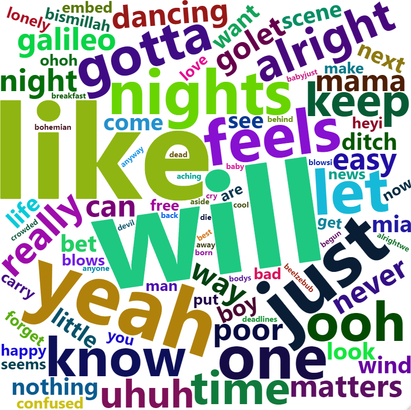

- Authors: Abhiket Gaurav, Artan Zandian, Macy Chan, Manju Abhinandana Kumar
An R package to extract and analyze lyrics
Overview
The goal of rlyrics is to extract and analyze lyrics. It provides functions to download songs attribute datasets from Kaggle, extract lyrics, clean text and generate a word cloud.
Functions
| Function Name | Input | Output | Description |
|---|---|---|---|
| download_data |
dataset, columns
|
Dataframe | Downloads dataset from kaggle dataset and extract
columns from csv file |
| extract_lyrics |
song_title, artist
|
String | Extracts song lyrics of a song song_title by
artist
|
| clean_text |
text, bool_contra_dict
|
String | Cleans up the lyrics by removing special characters,
html tags, #tags, contraction words and convert everything to lower
case |
| plot_cloud |
song, max_font_size,
max_words, background_color
|
Image | Creates a word cloud image of most occurring words of a song/songs by an artist |
Our Package in the R Ecosystem
There exist similar packages in R. However, this package is more holistic, in the sense that it downloads the lyrics through APIs, cleans the text, and then makes the word cloud. There are packages which does one of these steps. This package takes care of all the steps. Of the many other similar packages, the one that come close is: geniusr
Installation
You can install the development version of rlyrics from GitHub with:
# install.packages("devtools")
devtools::install_github("UBC-MDS/rlyrics")Features
The rlyrics packages contains the following four functions:
download_data()The download data function downloads dataset from Kaggle, extracts the given columns from csv file and creates a dataframe.extract_lyrics()The extract lyrics function, extracts the lyrics from API for a song title and artist and saves it as a dataframe with columns song title, artist and lyrics.clean_text()The lyrics extracted fromextract_lyrics()are not clean. It removes special characters, html tags, #tags, contraction words and converts everything to lower case.plot_cloud()The plot cloud function creates a word cloud of most occurring words in a song/songs by an artist.
Example
Downloading and Selecting
The first function in our package is the
download_data(). Here you will input your kaggle
dataset and the columns to be extracted into a dataframe with
columns argument.
To use the Kaggle API, sign up for a Kaggle account at Kaggle. Then go to the ‘Account’ tab of your user profile (https://www.kaggle.com/<username>/account) and select ‘Create API Token’. This will trigger the download of kaggle.json, a file containing your API credentials. Place this file in the location ~/.kaggle/kaggle.json. The function will automatically read your Kaggle credentials from the above path.
For more information about API call limits and API care recommendations please visit the Kaggle API or Official Kaggle API documentation.
library(rlyrics)
# Example dataset: Spotify Song Attributes
dataset <- "geomack/spotifyclassification"
# Extract columns
df <- download_data(dataset, c("song_title", "artist"))Extracting Lyrics
The extract_lyrics() function gets the
song_title and artist name, checks validity
and availability of the combination, and extracts the lyrics for that
song in a raw string format with header, footer etc which needs to be
cleaned in order to create a human-readable text.
library(rlyrics)
# extracting lyrics
extract_lyrics( "22", "Taylor Swift")Cleaning
The clean_text() function turns the raw lyrics into a
human-readable text.
library(rlyrics)
text <- "Early optimization is the root of all evil!"
# Clean the extracted raw lyrics (text)
clean_text(text)Creating WordCloud
WordCloud is an artistic rendering of the most frequent words in a
text document. A higher occurrence for a word is translated into a
larger text size. At this stage, we have helper functions to facilitate
the extraction and cleaning of lyrics. The plot_cloud()
function accepts a dataframe with artist and song_title data. It will
then extract the lyrics for all songs and saves a WordCloud of the most
occurring terms in the file_path provided by the user. The WordCloud
parameters to be set are self-explanatory: max_font_size, max_word and
background_color.
library(rlyrics)
song <- data.frame(song_title = c("22", "Bohemian Rhapsody"), artist = c("Taylor Swift", "Queen"))
# plotting and saving WordCloud
plot_cloud(song, max_font_size=1.6, max_words=100, background_color="white")
Contributors
The names of core development team is listed below.
| Name | GitHub Handle |
|---|---|
| Abhiket Gaurav | abhiket |
| Artan Zandian | artanzand |
| Macy Chan | macychan |
| Manju Abhinandana Kumar | manju-abhinandana |
We welcome and recognize all contributions. Check out the contributing guidelines. Please note that this project is released with a Code of Conduct. By contributing to this project, you agree to abide by its terms.